Examples
contour_boxplot_example
This example demonstrates the use of contour boxplots to visualize the variability in an ensemble of 2D scalar fields. It generates a synthetic ensemble of scalar fields with Gaussian blobs and visualizes the ensemble contours using spaghetti plots and contour boxplots.
import necessary libraries
import numpy as np
import matplotlib.pyplot as plt
from uvisbox.Modules.ContourBoxplot.contour_boxplot import contour_boxplot
from PIL import Image
def create_ensemble_scalarfield(image_res=256, n_ensembles=30, sigma_min=5, sigma_max=50):
# Create an ensemble of 2D scalar fields with Gaussian blobs in the center.
# Args:
# image_res (int): Resolution of the image (image_res x image_res).
# n_ensembles (int): Number of ensemble members.
# sigma_min (float): Minimum sigma for Gaussian.
# sigma_max (float): Maximum sigma for Gaussian.
# Returns:
# np.ndarray: Array of shape (n_ensembles, image_res, image_res).
x = np.linspace(0, image_res-1, image_res)
y = np.linspace(0, image_res-1, image_res)
xx, yy = np.meshgrid(x, y)
grid = np.stack([xx, yy], axis=-1)
ensemble = []
for i in range(n_ensembles):
sigma = np.random.uniform(sigma_min, sigma_max)
cov = np.array([[sigma**2, 0], [0, sigma**2]])
mu = np.array([image_res/2, image_res/2])
inv_cov = np.linalg.inv(cov)
diff = grid - mu
pdf = np.exp(-0.5 * np.sum(diff @ inv_cov * diff, axis=-1))
# Normalize to [-1, 1]
pdf = 2 * (pdf - np.min(pdf)) / (np.max(pdf) - np.min(pdf)) - 1
ensemble.append(pdf)
return np.array(ensemble)
Generate a synthetic ensemble of scalar fields and visualize using spaghetti
# Generate synthetic ensemble of scalar fields
ensemble = create_ensemble_scalarfield(image_res=128, n_ensembles=100, sigma_min=20, sigma_max=100)
# extract contours at isovalue = 0.7
binary_images = (ensemble < 0.7).astype(np.bool_)
# Visualize the ensemble contours using spaghetti
fig, ax = plt.subplots(1,2, figsize=(8, 4),sharex=True,sharey=True)
for i in range(binary_images.shape[0]):
# contour at the middle of 0 and 1
ax[0].contour(binary_images[i], levels=[0.5], colors='black', linewidths=1, alpha=0.3)
ax[0].set_title("Ensemble Contours")
Calculate and plot the contour boxplot
# contour_boxplot(binary_images, ax=ax[1], show_median=True, show_iqr=True,
# show_non_outliers=True, show_outliers=True, show_firstquartile=True, outlier_percentile=95)
ax[1] = contour_boxplot(binary_images, percentil=95, ax=ax[1], show_median=True, show_outliers=True)
ax[1].set_title("Contour Boxplot")
ax[0].set_aspect('equal', adjustable='box')
plt.show()
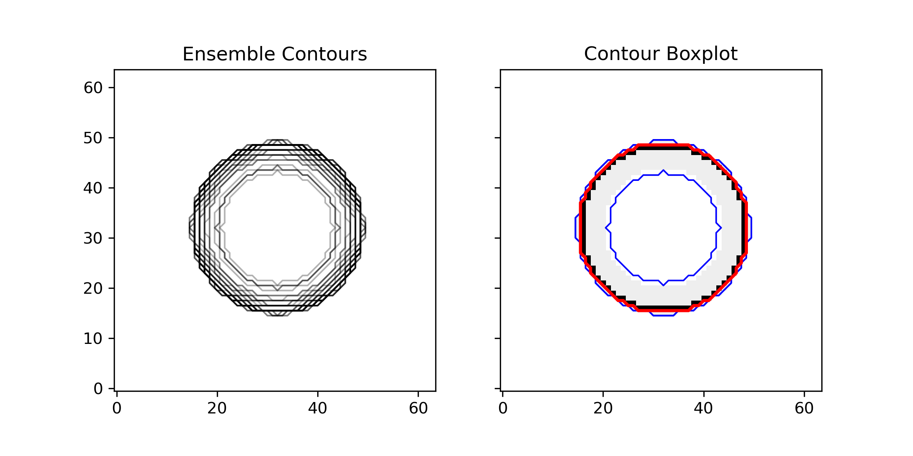
curve_boxplot_example
This example demonstrates how to create a curve band depth plot using hurricane track data. It visualizes the tracks on a map and highlights the most central tracks based on band depth.
Import necessary libraries and load dataset
from uvisbox.Datasets import irma2017_perturbed_tracks
from uvisbox.Modules.CurveBoxplot.curve_boxplot_mesh import curves_band_mesh
from uvisbox.Modules.CurveBoxplot.curve_boxplot_stats import curve_banddepths
import matplotlib.pyplot as plt
from mpl_toolkits.basemap import Basemap
import numpy as np
lon_lat_coords = irma2017_perturbed_tracks.load_dataset()
Create figure with 2 subplots and set up Basemaps for geographic map visualization. In addition, plot all hurricane tracks for each ensemble member in light gray on the left subplot.
# create a figure with 2 subplots
fig, (ax1, ax2) = plt.subplots(1, 2, figsize=(12, 6))
# set up Basemaps for geographic map visualization on left subplot
m1 = Basemap(projection='merc',
llcrnrlat=np.min(lon_lat_coords[:, :, 1]) - 5,
urcrnrlat=np.max(lon_lat_coords[:, :, 1]) + 5,
llcrnrlon=np.min(lon_lat_coords[:, :, 0]) - 5,
urcrnrlon=np.max(lon_lat_coords[:, :, 0]) + 5,
resolution='i', ax=ax1)
m1.drawcoastlines()
m1.drawcountries()
m1.drawparallels(np.arange(-90., 91., 10.), labels=[1, 0, 0, 0])
m1.drawmeridians(np.arange(-180., 181., 10.), labels=[0, 0, 0, 1])
# set up Basemaps for geographic map visualization on right subplot
m2 = Basemap(projection='merc',
llcrnrlat=np.min(lon_lat_coords[:, :, 1]) - 5,
urcrnrlat=np.max(lon_lat_coords[:, :, 1]) + 5,
llcrnrlon=np.min(lon_lat_coords[:, :, 0]) - 5,
urcrnrlon=np.max(lon_lat_coords[:, :, 0]) + 5,
resolution='i', ax=ax2)
m2.drawcoastlines()
m2.drawcountries()
m2.drawparallels(np.arange(-90., 91., 10.), labels=[1, 0, 0, 0])
m2.drawmeridians(np.arange(-180., 181., 10.), labels=[0, 0, 0, 1])
# plot all curves in light gray
for curve in lon_lat_coords:
x, y = m1(curve[:, 0], curve[:, 1])
ax1.plot(x, y, color='lightgray', alpha=0.75)
ax1.set_title('Hurricane Tracks')
ax1.set_xlabel('Longitude')
ax1.set_ylabel('Latitude')
Calculate curve band depths, sort the curves in descending order, generate the mesh for the 75th percentile band depth, and plot the mesh and median curve.
# calculate curve band depths for all curves
cur_depths = curve_banddepths(lon_lat_coords)
# sort curves by depth in descending order
sorted_indices = np.argsort(-cur_depths)
sorted_curves = lon_lat_coords[sorted_indices]
# get mesh for the 75th percentile band depth
points, triangles = curves_band_mesh(sorted_curves, percentile=75)
# plot the mesh
x, y = m2(points[:, 0], points[:, 1])
f_colors = np.ones(len(triangles))
ax2.tripcolor(x, y, triangles, facecolors=f_colors)
# plot median curve
median_curve = sorted_curves[0]
x, y = m2(median_curve[:, 0], median_curve[:, 1])
ax2.plot(x, y, color='red', label='Median Curve', linewidth=2)
ax2.set_title('Curve Band Depth Plot')
ax2.set_xlabel('Longitude')
ax2.set_ylabel('Latitude')
plt.show()
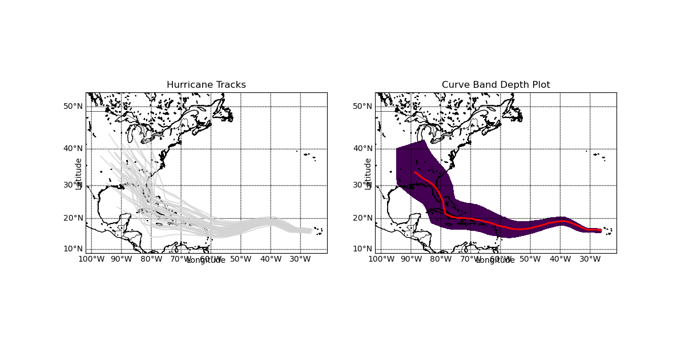
functional_boxplot_example
This example demonstrates how to create functional boxplots using the uvisbox library.
It uses the sea surface temperature dataset from Sun, Y., & Genton, M. G. (2011).
Functional Boxplots. Journal of Computational and Graphical Statistics, 20(2), 316–334.
https://doi.org/10.1198/jcgs.2011.09224 and computes both the functional band depth and
modified functional band depth to visualize the centrality and variability of the time series data.
The data consist of monthly sea surface temperatures (SST) measured in degrees Celsius over
the east-central tropical Pacific Ocean in degrees Celsius from January 1951 to December 2007.
import necessary libraries and load dataset
from uvisbox.Datasets import sea_surface_temp_data
import matplotlib.pyplot as plt
from uvisbox.Modules.FunctionalBoxplot.functional_boxplot import functional_boxplot
data = sea_surface_temp_data.load_dataset()
X = data.T
Create figure with three subplots and plot the original sea surface temperature time series
# create a figure with 3 subplots
fig, (ax1, ax2, ax3) = plt.subplots(1, 3, figsize=(22, 5))
# plot the original time series in the first subplot
for i in range(X.shape[0]):
ax1.plot(X[i,:], alpha=1.)
ax1.set_title("Sea Surface Temperature Time Series")
ax1.set_xlabel("Month")
ax1.set_ylabel("Temperature")
Calculate and plot the functional band depth for the time series data with 50th and 10th percentile bands in the second and third subplots, respectively.
ax2 = functional_boxplot(X, percentil=50, scale=1.0, ax=ax2)
ax3 = functional_boxplot(X, method='modified_bd', percentil=10, scale=1.0, ax=ax3)
plt.show()
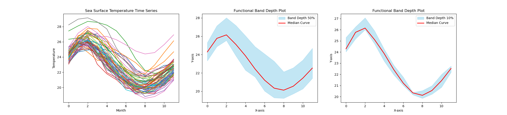
probabilistic_marching_cubes_example
This example demonstrates how to compute and visualize probabilistic isosurfaces using the marching cubes algorithm on a synthetic 4D dataset. It compares a deterministic isosurface with a probabilistic isosurface derived from an ensemble of scalar fields.
Import necessary libraries
import numpy as np
import pyvista as pv
from uvisbox.Modules.ProbabilisticMarchingCubes.probabilistic_marching_cubes import probabilistic_marching_cubes as pmc
Generate a regular grid over a 3D domain [-1, 1] and use the tear drop function to create an ensemble of scalar fields with some noise
# tear drop function
def tear_drop(x, y, z):
return 0.5*x**5 + 0.5*x**4 - y**2 - z**2
# Generate synthetic 4D data (n_x, n_y, n_z, n_ens)
n_x, n_y, n_z, n_ens = 16, 16, 16, 10
x = np.linspace(-1, 1, n_x)
y = np.linspace(-1, 1, n_y)
z = np.linspace(-1, 1, n_z)
X, Y, Z = np.meshgrid(x, y, z)
# Create an ensemble of scalar fields with some noise
noise_less_F = tear_drop(X, Y, Z)
origin = (0, 0, 0)
spacing = (1, 1, 1)
grid_dimensions = (n_x, n_y, n_z)
grid = pv.ImageData(dimensions=grid_dimensions, origin=origin, spacing=spacing)
# Add some data to the cell data (e.g., a 4D NumPy array)
grid.point_data["values"] = noise_less_F.flatten(order='F')
# Set isovalue and compute deterministic isosurface
isovalue = -0.001
iso_surface = grid.contour([isovalue], scalars="values")
# Set up the plotter with two subplots
plotter = pv.Plotter(shape=(1, 2), off_screen=True)
# Plot deterministic isosurface
plotter.subplot(0, 0)
plotter.add_text("Deterministic Isosurface", font_size=12)
plotter.add_mesh(iso_surface, color='lightblue', opacity=0.5)
Generate ensemble data with noise and calculate probabilistic isosurface using probabilistic marching cubes
# Generate ensemble data with noise
F = np.zeros((n_x, n_y, n_z, n_ens))
for e in range(n_ens):
noise = np.random.normal(0, 0.01, (n_x, n_y, n_z))
F[:, :, :, e] = noise_less_F + noise
# Compute probabilistic marching cubes
plotter.subplot(0, 1)
plotter = pmc(F, isovalue, plotter=plotter)
plotter.add_text("Probabilistic Isosurface", font_size=12)
plotter.show()
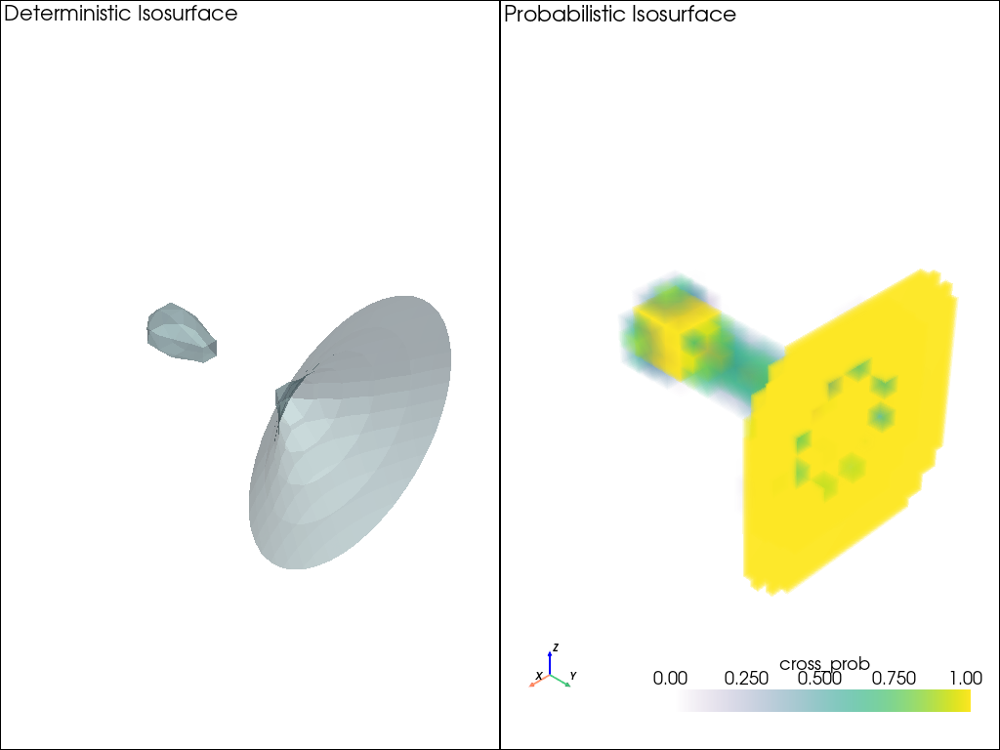
probabilistic_marching_squares_example
This example demonstrates the use of the probabilistic_marching_squares function from the uvisbox library to compute and visualize probabilistic isocontours from an ensemble of scalar fields defined on a regular grid using the marching squares algorithm. It visualizes the probability of the isocontour passing through each cell in the grid.
Import necessary libraries
import numpy as np
from uvisbox.Modules.ProbabilisticMarchingSquares.probabilistic_marching_squares import probabilistic_marching_squares
import matplotlib.pyplot as plt
Generate a regular grid over a 2D domain [0, 4π], use function f(x, y) = sin(x) * cos(y) and create an ensemble of scalar fields with some noise
n, m, n_ens = 50, 50, 100
x = np.linspace(0, 4 * np.pi, n)
y = np.linspace(0, 4 * np.pi, m)
X, Y = np.meshgrid(x, y, indexing='ij')
# Create ensemble with noise
F = np.array([
np.sin(X) * np.cos(Y) + 0.2 * np.random.randn(n, m)
for _ in range(n_ens)
])
F = np.transpose(F, (1, 2, 0)) # Shape (n, m, n_ens)
Set isovalue, run probabilistic marching squares, and visualize result
# Set isovalue
isovalue = 0.5
# # Run probabilistic marching squares
# prob_contour = probabilistic_marching_squares(F, isovalue)
fig, ax = plt.subplots(figsize=(8, 6))
ax = probabilistic_marching_squares(F, isovalue, ax=ax)
plt.show()
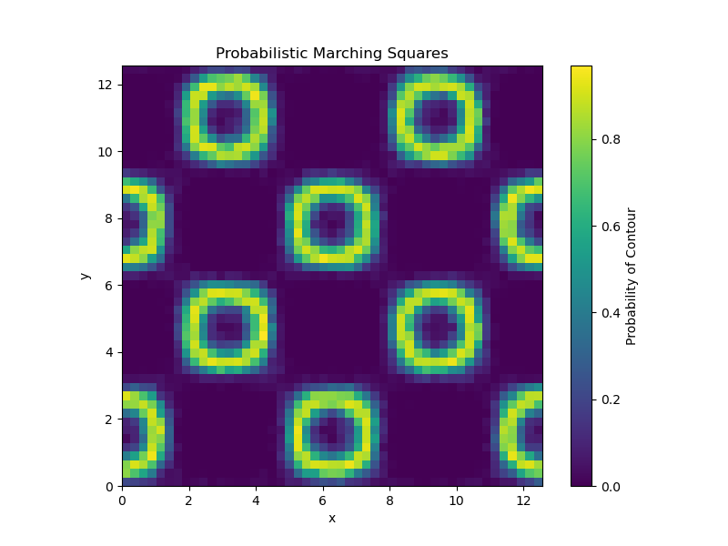
probabilistic_marching_tet_example
This example demonstrates the use of probabilistic marching tetrahedra to compute and visualize probabilistic isosurfaces from an ensemble of scalar fields defined on a tetrahedral mesh. It compares a deterministic isosurface with a probabilistic isosurface derived from the ensemble.
Import necessary libraries
import numpy as np
import pyvista as pv
from uvisbox.Modules.ProbabilisticMarchingTetrahedra.probabilistic_marching_tetrahedra import probabilistic_marching_tetrahedra as pmt
Generate tetrahedral mesh over a 3D domain [-1, 1] and use the tear drop function to create an ensemble of scalar fields with some noise
# tear drop function
def tear_drop(x, y, z):
return 0.5*x**5 + 0.5*x**4 - y**2 - z**2
# Generate synthetic 4D data (n_x, n_y, n_z, n_ens)
n_x, n_y, n_z, n_ens = 16, 16, 16, 10
x = np.linspace(-1, 1, n_x)
y = np.linspace(-1, 1, n_y)
z = np.linspace(-1, 1, n_z)
X, Y, Z = np.meshgrid(x, y, z)
F = np.zeros((n_x, n_y, n_z, n_ens))
noise_less_F = tear_drop(X, Y, Z)
# Create an ensemble of scalar fields with some noise
for e in range(n_ens):
noise = np.random.normal(0, 0.01, (n_x, n_y, n_z))
F[:, :, :, e] = noise_less_F + noise
points = np.c_[X.ravel(), Y.ravel(), Z.ravel()]
# create teterahedral mesh
pv_points= pv.PolyData(points)
grid = pv_points.delaunay_3d(offset=0.1)
# extract the tetrahedra
tetrahedra = grid.cells.reshape(-1, 5)[:, 1:]
edges = grid.extract_all_edges()
# edges.plot(line_width=1, color='k')
cell_types = np.full(tetrahedra.shape[0], pv.CellType.TETRA)
tetrahedra = np.hstack((np.full((tetrahedra.shape[0], 1), 4), tetrahedra))
new_grid = pv.UnstructuredGrid(tetrahedra, cell_types, points)
new_grid.point_data["values"] = noise_less_F.flatten(order='F')
isovalue = -0.001
# Compute deterministic isosurface
iso_surface = new_grid.contour([isovalue], scalars="values")
# Set up the plotter with two subplots
plotter = pv.Plotter(shape=(1, 2))
# Plot deterministic isosurface
plotter.subplot(0, 0)
plotter.add_text("Deterministic Isosurface", font_size=12)
plotter.add_mesh(iso_surface, color='lightblue', opacity=0.5)
F_reshaped = F.reshape(-1, n_ens)
# Compute probabilistic marching tetrahedra
plotter.subplot(0, 1)
plotter = pmt(points, F_reshaped, tetrahedra, isovalue, plotter=plotter)
plotter.add_text("Probabilistic Isosurface", font_size=12)
plotter.show()
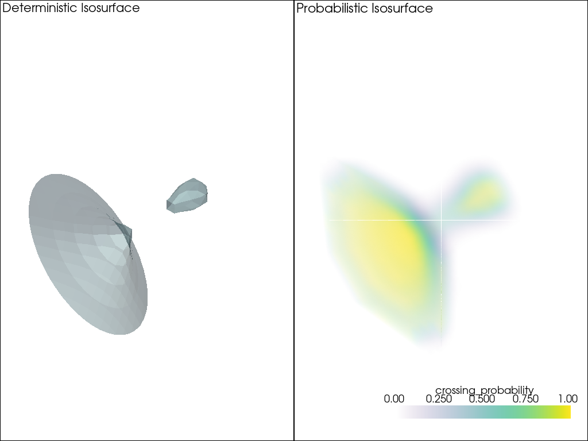
probabilistic_marching_triangles_example
This example demonstrates the use of the probabilistic marching triangles algorithm to compute and visualize probabilistic isocontours from an ensemble of scalar fields defined on a triangular mesh. It visualizes the probability of the isocontour passing through each triangle in the mesh.
Import necessary libraries
from matplotlib.tri import Triangulation
import matplotlib.pyplot as plt
import numpy as np
from uvisbox.Modules.ProbabilisticMarchingTriangles.probabilistic_marching_triangles import probabilistic_marching_triangles
Generate a triangular mesh over a 2D domain [0, 2π], use function f(x, y) = sin(x) * cos(y) and create an ensemble of scalar fields with some noise
# Synthetic function: f(x, y) = sin(x) * cos(y)
def synthetic_func(x, y):
return np.sin(x) * np.cos(y)
# Domain setup
x = np.linspace(0, 2 * np.pi, 30)
y = np.linspace(0, 2 * np.pi, 30)
xv, yv = np.meshgrid(x, y)
points = np.column_stack([xv.ravel(), yv.ravel()])
# Triangulate the domain
tri = Triangulation(points[:, 0], points[:, 1])
triangles = tri.triangles
# Generate ensemble samples with noise
n_ens = 100
F = np.array([
synthetic_func(points[:, 0], points[:, 1]) + np.random.normal(0, 0.2, points.shape[0])
for _ in range(n_ens)
]).T # Shape (n_points, n_ens)
Set isovalue, run probabilistic marching triangles, and visualize result
# Set isovalue
isovalue = 0.5
# # Run probabilistic marching triangles
# prob_contour = probabilistic_marching_triangles(F, triangles, isovalue, num_samples=200)
fig, ax = plt.subplots(figsize=(8, 6))
ax = probabilistic_marching_triangles(F, points, triangles, isovalue, ax=ax)
plt.show()
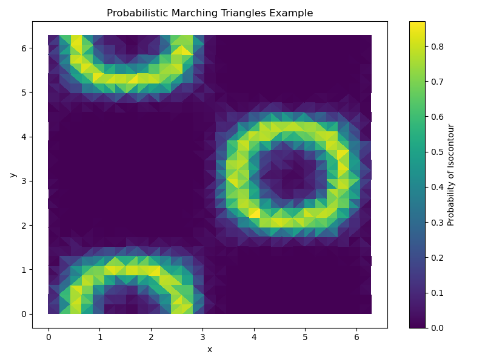
squid_glyphs_2d_example
This example demonstrates how to visualize 2D vector fields and their uncertainty using squid glyphs with the uvisbox library.
The example generates a 2D grid of vectors representing the double gyre flow, creates an ensemble by adding Gaussian noise, and then visualizes the ensemble using squid glyphs to represent uncertainty.
Import necessary libraries
from uvisbox.Modules.SquidGlyphs.squid_glyphs import squid_glyph_2D
import numpy as np
import matplotlib.pyplot as plt
generate a 2D grid over [0,2] x [0,1] and use double gyre flow to generate vector field with some noise to create an ensemble of vector fields
# Define the double gyre flow function
A = 0.1
omega = np.pi
epsilon = 0.25
def double_gyre(x, y, t=0):
a = epsilon * np.sin(omega * t)
b = 1 - 2 * a
f = a * x**2 + b * x
df_dx = 2 * a * x + b
u = -np.pi * A * np.sin(np.pi * f) * np.cos(np.pi * y)
v = np.pi * A * np.cos(np.pi * f) * np.sin(np.pi * y) * df_dx
return u, v
# Change domain to [0,2] x [0,1]
X, Y = np.meshgrid(np.linspace(0, 2, 10), np.linspace(0, 1, 5))
U, V = double_gyre(X, Y)
# Create ensemble data by perturbing vector magnitude and direction with Gaussian noise
n_ensemble = 20 # number of ensemble members
rng = np.random.default_rng(seed=42)
# Flatten the grid for easier perturbation
X_flat = X.flatten()
Y_flat = Y.flatten()
U_flat = U.flatten()
V_flat = V.flatten()
n_points = X_flat.size
# Compute magnitude and angle
mag = np.sqrt(U_flat**2 + V_flat**2)
angle = np.arctan2(V_flat, U_flat)
# Standard deviations for noise (tune as needed)
mag_noise_std = 0.20 * mag.max()
angle_noise_std = np.deg2rad(10) # 5 degree std
n_ensemble = 20
ensemble_vectors = np.zeros((n_points, n_ensemble, 2))
for i in range(n_points):
for j in range(n_ensemble):
# Perturb magnitude and anglels
mag_perturbed = mag[i] + rng.normal(0, mag_noise_std)
angle_perturbed = angle[i] + rng.normal(0, angle_noise_std)
# Convert back to Cartesian coordinates
ensemble_vectors[i, j] = [
mag_perturbed * np.cos(angle_perturbed),
mag_perturbed * np.sin(angle_perturbed)
]
positions = np.vstack((X_flat, Y_flat)).T
Set up the plot for both original vector field and uncertainty squid glyphs
fig, (ax1, ax2) = plt.subplots(2, 1, figsize=(20, 20))
# Plot original vector field with arrows
for i in range(n_points):
for j in range(n_ensemble):
u, v = ensemble_vectors[i, j]
x, y = positions[i]
ax1.arrow(x, y, u, v, head_width=0.03, head_length=0.06, fc='blue', ec='blue', alpha=0.1, length_includes_head=True)
ax1.set_title("Original Vector Field with Ensemble Members")
ax1.set_xlim(-0.25, 2.25)
ax1.set_ylim(-0.25, 1.25)
ax1.set_xlabel("X")
ax1.set_ylabel("Y")
ax1.grid()
# Plot uncertainty squid glyphs
ax2 = squid_glyph_2D(positions, ensemble_vectors, 1.0, scale=0.4, ax=ax2)
ax2.set_title("Uncertainty Squid Glyphs for Double Gyre Flow")
ax2.set_xlim(-0.25, 2.25)
ax2.set_ylim(-0.25, 1.25)
ax2.set_xlabel("X")
ax2.set_ylabel("Y")
ax2.grid()
plt.tight_layout()
plt.show()
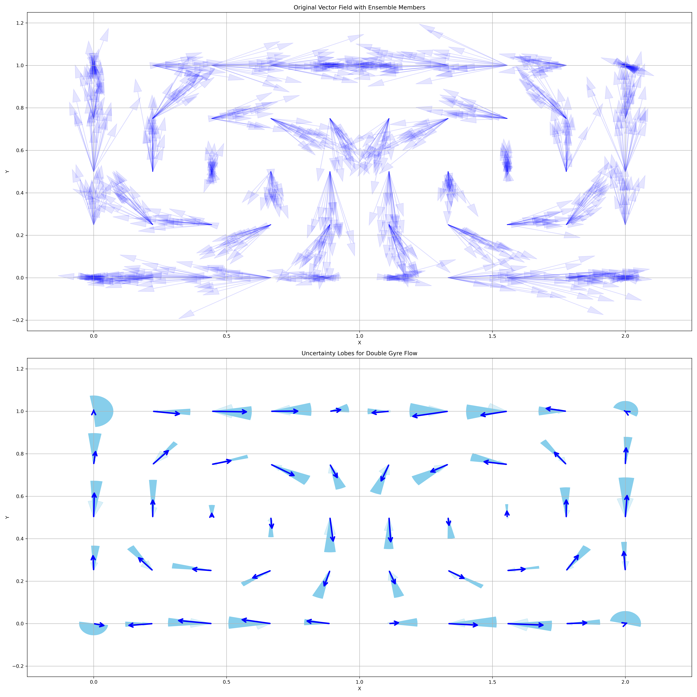
squid_glyphs_3D_example
This example demonstrates how to visualize 3D vector fields and their uncertainty using squid glyphs with the uvisbox library.
The example generates a 3D grid of vectors, creates an ensemble by adding Gaussian noise, and then visualizes the ensemble using squid glyphs to represent uncertainty.
Import necessary libraries
import numpy as np
from mpl_toolkits.mplot3d import Axes3D
from uvisbox.Core.BandDepths.vector_depths import cartesian_to_spherical
from uvisbox.Modules.SquidGlyphs.squid_glyphs import squid_glyph_3D
import pyvista as pv
# Generate a 3D grid of vectors. [vx,vy,vz]=[x,y,z]
grid_size = 3
vectors = []
for x in range(grid_size):
for y in range(grid_size):
for z in range(grid_size):
vectors.append((x, y, z))
grid_points = np.array(vectors)
# Convert to spherical coordinates
spherical_vectors = cartesian_to_spherical(np.array(vectors))
# Add Gaussian noise to spherical vectors to create an ensemble
ensemble_size = 20 # Number of ensemble members
noise_std_dev = 0.1 # Standard deviation for Gaussian noise
ensemble_vectors = np.zeros((len(spherical_vectors), ensemble_size, 3)) # initialize ensemble vectors
for i, vec in enumerate(spherical_vectors):
for j in range(ensemble_size):
noise = np.random.normal(0, noise_std_dev, 3)
noisy_vec = vec + noise
ensemble_vectors[i, j] = noisy_vec
Convert back to cartesian vectors for plotting with pyvista
plot_points = []
plot_directions = []
for i, vec in enumerate(spherical_vectors):
for j in range(ensemble_size):
noisy_vec = ensemble_vectors[i, j]
# Convert back to Cartesian coordinates for plotting
r, theta, phi = noisy_vec
vx = r * np.sin(theta) * np.cos(phi) + grid_points[i, 0] # start from original point
vy = r * np.sin(theta) * np.sin(phi) + grid_points[i, 1] # start from original point
vz = r * np.cos(theta) + grid_points[i, 2] # start from original point
plot_points.append(grid_points[i])
plot_directions.append((vx, vy, vz))
# conver t to numpy arrays
plot_points = np.array(plot_points)
plot_directions = np.array(plot_directions)
# Set up a pyvista plotter with two subplots
plotter = pv.Plotter(shape=(1, 2))
# Plot ensemble vectors using arrows in the first subplot
plotter.subplot(0, 0)
plotter.add_arrows(plot_points, plot_directions, color='green', mag=0.1, opacity=0.5)
plotter.add_axes()
plotter.add_text('Ensemble Vectors in 3D', font_size=12)
Calculate and plot squid glyphs in the second subplot with 50th percentile filtering and scale vector lengths by 0.1
plotter.subplot(0, 1)
plotter, points, triangles = squid_glyph_3D(grid_points, ensemble_vectors, 0.5, 0.1, ax=plotter)
plotter.add_text('Uncertainty Squid Glyphs in 3D', font_size=12)
plotter.show()
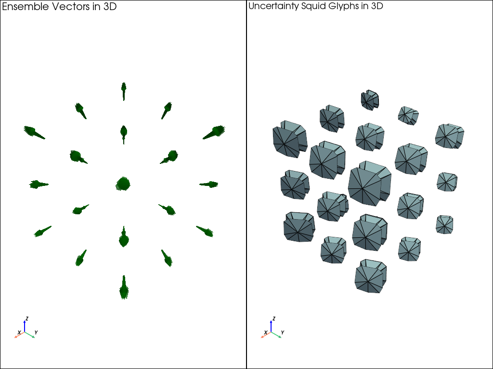
uncertainty_lobes_2D_example
This example demonstrates how to visualize 2D vector fields and their uncertainty using squid glyphs with the uvisbox library.
The example generates a 2D grid of vectors representing the double gyre flow, creates an ensemble by adding Gaussian noise, and then visualizes the ensemble using squid glyphs to represent uncertainty.
Import necessary libraries
from uvisbox.Modules.UncertaintyLobes.uncertainty_lobes import uncertainty_lobes
import numpy as np
import matplotlib.pyplot as plt
generate a 2D grid over [0,2] x [0,1] and use double gyre flow to generate vector field with some noise to create an ensemble of vector fields
# Define the double gyre flow function
A = 0.1
omega = np.pi
epsilon = 0.25
def double_gyre(x, y, t=0):
a = epsilon * np.sin(omega * t)
b = 1 - 2 * a
f = a * x**2 + b * x
df_dx = 2 * a * x + b
u = -np.pi * A * np.sin(np.pi * f) * np.cos(np.pi * y)
v = np.pi * A * np.cos(np.pi * f) * np.sin(np.pi * y) * df_dx
return u, v
# Change domain to [0,2] x [0,1]
X, Y = np.meshgrid(np.linspace(0, 2, 10), np.linspace(0, 1, 5))
U, V = double_gyre(X, Y)
# Create ensemble data by perturbing vector magnitude and direction with Gaussian noise
n_ensemble = 20 # number of ensemble members
rng = np.random.default_rng(seed=42)
# Flatten the grid for easier perturbation
X_flat = X.flatten()
Y_flat = Y.flatten()
U_flat = U.flatten()
V_flat = V.flatten()
n_points = X_flat.size
# Compute magnitude and angle
mag = np.sqrt(U_flat**2 + V_flat**2)
angle = np.arctan2(V_flat, U_flat)
# Standard deviations for noise (tune as needed)
mag_noise_std = 0.20 * mag.max()
angle_noise_std = np.deg2rad(10) # 5 degree std
n_ensemble = 20
ensemble_vectors = np.zeros((n_points, n_ensemble, 2))
for i in range(n_points):
for j in range(n_ensemble):
# Perturb magnitude and anglels
mag_perturbed = mag[i] + rng.normal(0, mag_noise_std)
angle_perturbed = angle[i] + rng.normal(0, angle_noise_std)
# Convert back to Cartesian coordinates
ensemble_vectors[i, j] = [
mag_perturbed * np.cos(angle_perturbed),
mag_perturbed * np.sin(angle_perturbed)
]
positions = np.vstack((X_flat, Y_flat)).T
Set up the plot for both original vector field and uncertainty squid glyphs
fig, (ax1, ax2) = plt.subplots(2, 1, figsize=(20, 20))
# Plot original vector field with arrows
for i in range(n_points):
for j in range(n_ensemble):
u, v = ensemble_vectors[i, j]
x, y = positions[i]
ax1.arrow(x, y, u, v, head_width=0.03, head_length=0.06, fc='blue', ec='blue', alpha=0.1, length_includes_head=True)
ax1.set_title("Original Vector Field with Ensemble Members")
ax1.set_xlim(-0.25, 2.25)
ax1.set_ylim(-0.25, 1.25)
ax1.set_xlabel("X")
ax1.set_ylabel("Y")
ax1.grid()
# Plot uncertainty squid glyphs
ax2 =uncertainty_lobes(positions, ensemble_vectors, 1.0, 0.5, scale=0.4, ax=ax2)
ax2.set_title("Uncertainty Lobes for Double Gyre Flow")
ax2.set_xlim(-0.25, 2.25)
ax2.set_ylim(-0.25, 1.25)
ax2.set_xlabel("X")
ax2.set_ylabel("Y")
ax2.grid()
plt.tight_layout()
plt.show()
uncertainty_tube_example
This example demonstrates how to visualize uncertainty tubes in 3D using the uvisbox library.
It generates random seed points, computes their trajectories in a 3D flow field, and visualizes the uncertainty tubes along these trajectories.
Import necessary libraries
import numpy as np
import matplotlib.pyplot as plt
from uvisbox.Datasets import flowmap_3d
from uvisbox.Core.Interpolations import linear_interpolate
from uvisbox.Modules.UncertaintyTube.uncertainty_tubes_stats import generate_cross_sections
from uvisbox.Modules.UncertaintyTube.uncertainty_tubes_mesh import generate_tube_mesh
from uvisbox.Modules.UncertaintyTube.uncertainty_tubes_vis import matplotlib_uncertainty_tube_vis
from uvisbox.Core.Colors.colortree import ColorTree
Generate random seed points and compute their trajectories in a 3D flow field
t0 = 0 # start time
t1 = 5 # end time
n_steps = 30 # number of time steps
number_of_seeds = 10 # Increased for better parallel demonstration
scale = np.arange(number_of_seeds)
scale = linear_interpolate(scale, 0, number_of_seeds-1, 1.5, 2.0)
xy_scale = np.ones(number_of_seeds)
# change odd place of xy_scale to 0.1
xy_scale[1::2] = 0.1 # Set every second element to 0.1
seeds = np.random.uniform(-1,1, (number_of_seeds, 3))
# trajectories are generated in [n_steps, n_seeds, n_samples, n_dims]
trajectories = flowmap_3d(seeds, t0, t1, n_steps, scale=scale, xy_scale=xy_scale)
# Key functions to generate uncertainty tubes
cross_sections, eigen_values = generate_cross_sections(trajectories, None, 16, e_proj=0.5, n_jobs=2)
vertices, faces, mean_trajectories = generate_tube_mesh(trajectories, cross_sections, n_jobs=12)
use eigen values to create texture coordinates
eigen_values = np.transpose(eigen_values, (1,0,2,3))
eigen_values = eigen_values.reshape((-1,2)).astype(np.float32)
max_eigen_values = eigen_values.max(axis=1) # prepare to rescale eigen values to 0,1 to create texture coordinates
rescaled_max_eigen_values = linear_interpolate(max_eigen_values, max_eigen_values.min(), max_eigen_values.max(), 0.0, 1.0)
eigen_values_ratio = np.nan_to_num(eigen_values[:,1] / eigen_values[:,0] , nan=0.0, posinf=1.0, neginf=0.0) # the second axis
uv_coords = np.stack([rescaled_max_eigen_values, eigen_values_ratio], axis=1)
# create figure and axis with two subplots
fig , (ax1, ax2) = plt.subplots(1, 2, figsize=(15, 7), subplot_kw={'projection': '3d'})
# spaghetti plot of all trajectories
for i in range(trajectories.shape[1]):
for i_sample in range(trajectories.shape[2]):
ax1.plot(trajectories[:, i, i_sample, 0], trajectories[:, i, i_sample, 1],
trajectories[:, i, i_sample, 2], color='black', alpha=0.50)
ax1.set_title("Spaghetti Plot of Trajectories")
ax1.set_xlabel("X")
ax1.set_ylabel("Y")
ax1.set_zlabel("Z")
# for the colormap, rescaled_max_eigen_values are used for level of uncertainty,
# vivid color highlights high uncertainty (larger size),
# gray color represents low uncertainty (smaller size).
# eigen_values are used for the interpolating the colormap ('viridis'),
# blue means high asymmetry, yellow means symmetry.
ax2 = matplotlib_uncertainty_tube_vis(vertices, faces, mean_trajectories, uv_coords, axis=ax2)
plt.show()
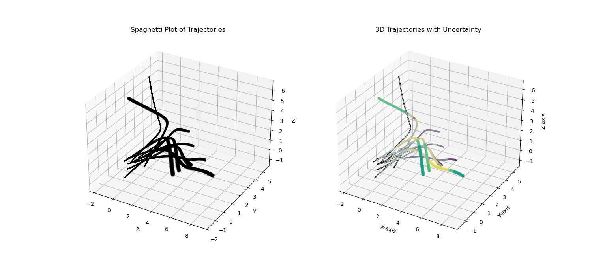
vsup_example
Example script demonstrating the ColorTree colormap for visualizing value and uncertainty. A ColorTree is inspired by VSUP (Value-Suppressing Uncertainty Palettes) and creates a tree-based colormap. Value is suppressed based on uncertainty, allowing for more effective visualization of uncertain data.
VSUP:https://medium.com/@uwdata/value-suppressing-uncertainty-palettes-426130122ce9
This script creates a sample 2D image where the x-axis represents value (0 to 1) and the y-axis represents uncertainty (0 to 1). It generates three visualizations: - Discrete: Uses tree nodes for discrete levels. - Continuous: Interpolates colormap colors with uncertainty. - Continuous Leaves: Uses colormap for leaf levels in discrete mode.
Run this script to see the differences between the modes.
Important necessary libraries
import numpy as np
import matplotlib.pyplot as plt
from uvisbox.Core.Colors.colortree import ColorTree
Set up the figure with three subplots
fig, ax = plt.subplots(1, 3, figsize=(12, 6))
Create a sample image where x (columns) is value (0 to 1), y (rows) is uncertainty (0 to 1)
height, width = 100, 100
value_grid = np.linspace(0, 1, width)[None, :] # Shape (1, 100), broadcasted to (100, 100)
uncertainty_grid = np.linspace(0, 1, height)[:, None] # Shape (100, 1), broadcasted to (100, 100)
# Create image array with shape (100, 100, 2) where last dim is [uncertainty, value]
image = np.stack([uncertainty_grid * np.ones((height, width)), value_grid * np.ones((height, width))], axis=-1)
# Initialize ColorTree with depth=4 and default settings
colormap = ColorTree(depth=4, cmap="viridis")
# Generate colors for discrete mode (uses tree nodes)
colors = colormap.get_colors(image, discrete=True)
# Plot the discrete color map
ax[0].imshow(colors, origin='lower', extent=(0, 1, 0, 1))
ax[0].set_title("Discrete Color Map")
ax[0].set_xlabel("Value")
ax[0].set_ylabel("Uncertainty")
# Generate colors for continuous mode (interpolates colormap with uncertainty)
continuous_color = colormap.get_colors(image, discrete=False)
# Plot the continuous color map
ax[1].imshow(continuous_color, origin='lower', extent=(0, 1, 0, 1))
ax[1].set_title("Continuous Color Map")
ax[1].set_xlabel("Value")
ax[1].set_ylabel("Uncertainty")
# Generate colors for continuous leaves mode (discrete with colormap at leaves)
continuous_leaves_color = colormap.get_colors(image, discrete=True, continuous_leaves=True)
# Plot the continuous leaves color map
ax[2].imshow(continuous_leaves_color, origin='lower', extent=(0, 1, 0, 1))
ax[2].set_title("Continuous Leaves Color Map")
ax[2].set_xlabel("Value")
ax[2].set_ylabel("Uncertainty")
# Display the plot
plt.show()
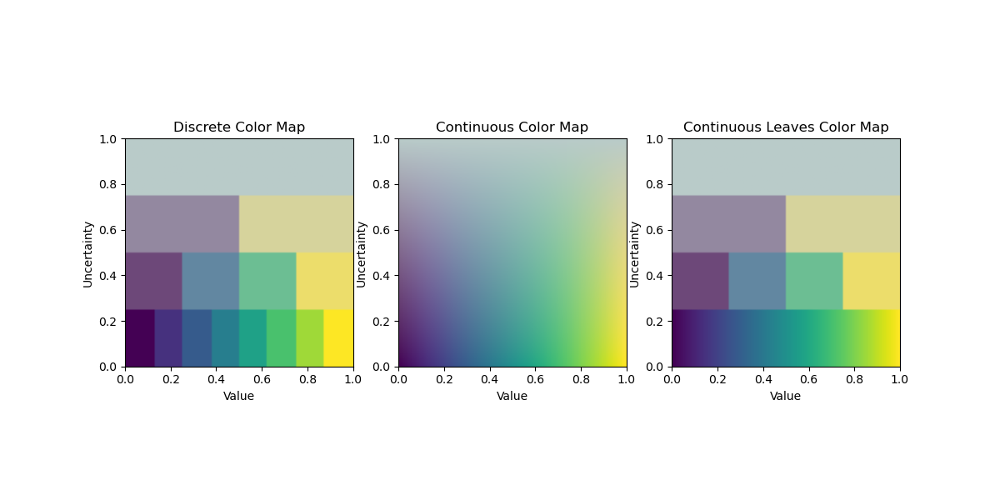